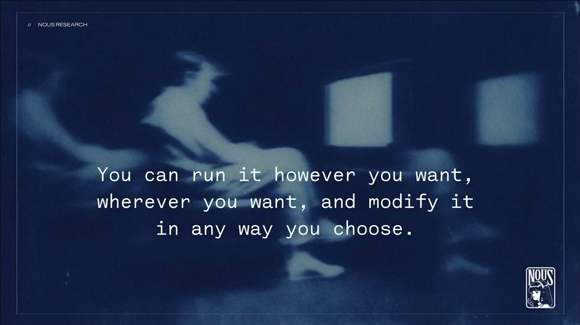
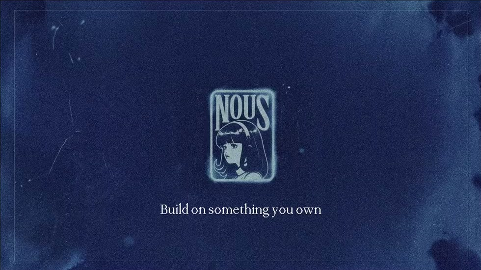
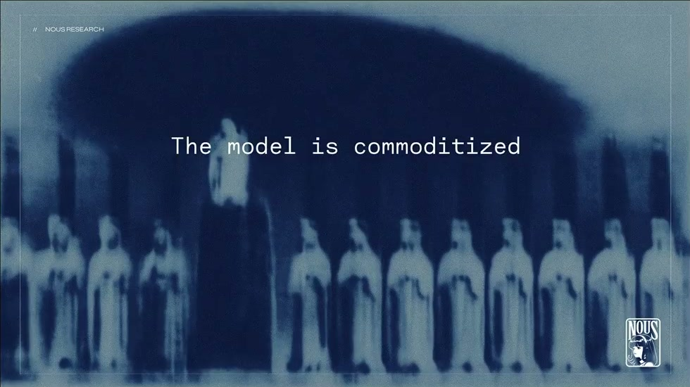
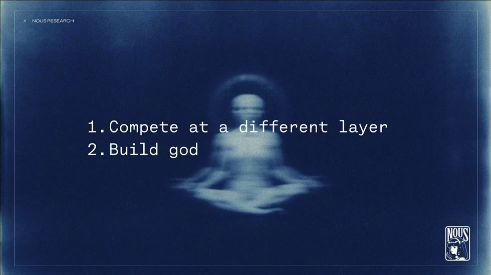
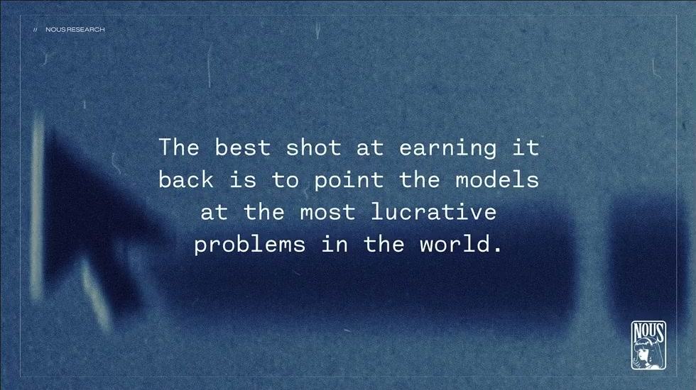
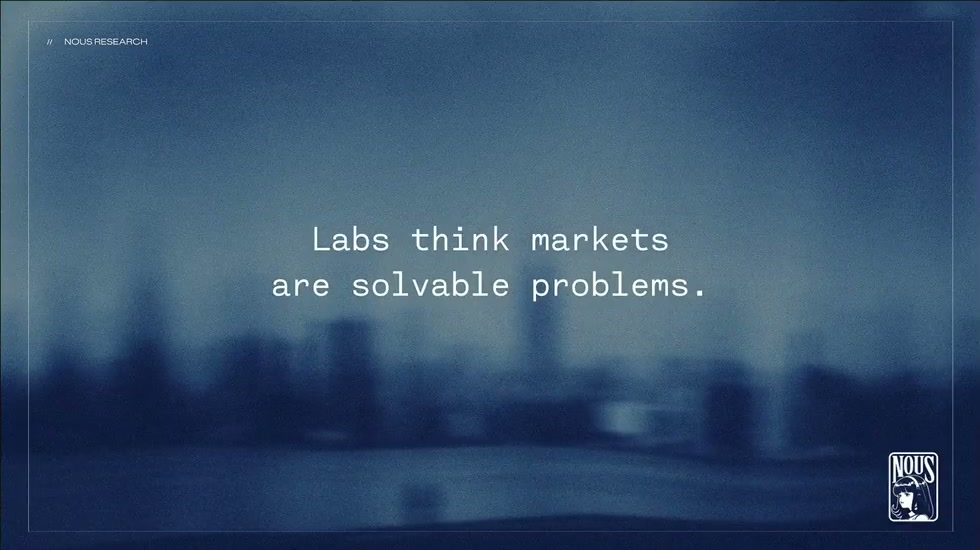
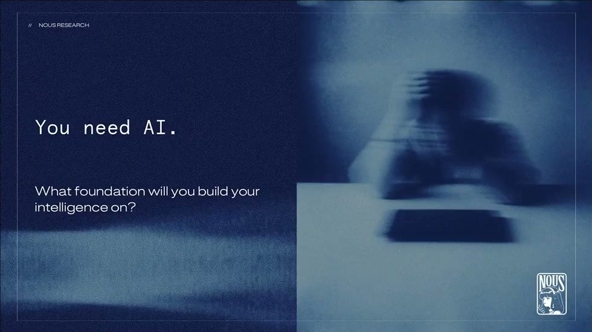
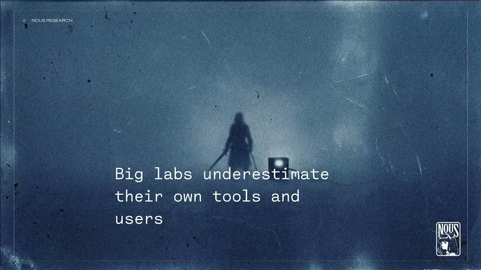
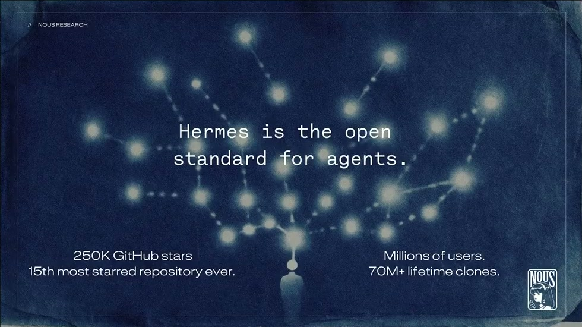
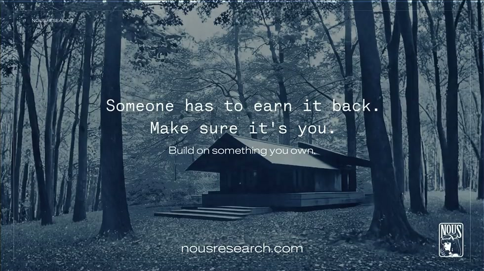

What owning your agent means
The clearest statement of the talk is a slide that is a single block of text, every sentence beginning "You should be able to". Use smarter models in your agent, or cheaper ones. Use local models. Use a different model for every job, and switch models in the middle of a conversation. Choose what data the agent has, what it remembers and what compute it runs on. Run it on a machine that never touches the internet. Read the prompt it runs on. See every tool it has and turn off the ones you do not want. Export your agent.
On stage he compresses it. With Hermes Agent you can run it however and wherever you want and modify it as you see fit, and if you stop enjoying it you can take your ball and go home. Companies should build on foundations they own and be able to swap models in and out.


“you should be building these systems on foundations that you own.”00:11:05
- Choose the model per job, including local ones, and change it mid-conversation.
- Run it offline, read its prompt, see and switch off its tools.
- Export it and leave whenever you like.
Evidence: transcript 00:08:01
Why not just rent: the labs have a bet to earn back
His opening question is how anyone makes back an infrastructure and research bet of this size. Individual labs have spent hundreds of billions, and the industry perhaps trillions.
Selling the model will not do it, because the model is becoming a commodity. He tells the room they know this already: they switch between models freely to try whatever is new, without much regard for who is behind it. Charts going around that week showed the average price of a token falling while total spend rose and serving costs stayed flat, so the margin on a leading model is narrowing.
That leaves two moves. The first is to take margin at another layer, and the one that matters is the layer in front of the user. Consumers are fickle; businesses spend heavily on tokens for work that makes money, and once a vendor is embedded in a business it is hard to remove. This is why the fight has moved to agents.


“Stickiness means margin.”00:02:31
- Labs have spent hundreds of billions each and need to recover it.
- Models are interchangeable to the people using them, so margin is thin.
- The money is in being embedded in a business, at the agent layer.
Evidence: transcript 00:00:00
Beholden: a workforce someone else can call out on strike
He asks the audience to picture their business two or three years out and guess how much of its output is produced by agents. His answer is seventy percent, conservatively. If that workforce is organized by somebody else, whose incentives may run against yours, it can be organized into a strike.
The second move is worse for the customer. If a lab does build something godlike, the best way to earn the money back is not to sell it at a shrinking margin so others can solve hard, lucrative problems. It is to solve them itself. He says labs treat markets, and the financial industry in particular, as a tractable problem. They lack the context for now, so they hire banking analysts and partner with the largest firms. He expects them to go to the source in time.
His slide at this point is the six headlines: OpenAI targeting the work of junior bankers, wanting access to bank accounts, hiring an investment banker and signing banks as customers, and Anthropic testing a feature for Claude to analyze personal finances.


“they can be organized into a strike.”00:02:31
- A vendor that runs most of your workforce holds the leverage.
- A lab with a strong enough model has reason to compete with its customers.
- His evidence is the labs' recent moves into banking and personal finance.
Evidence: transcript 00:00:00, 00:04:04
Whatever you build on now will harden
He grants that trapping customers and then raising prices is an old game. What is different is the size of what is at stake, which he puts at meaningful percentages of the world economy.
Nobody in the room can sit it out. Everyone has seen what these systems do and there is no going back. The people deciding now are choosing where their organizations put down roots, and whatever they choose will set: they will build know-how, processes and systems around it.

“Do not build on quicksand foundations. Build on open foundations.”00:04:04
- Lock-in is familiar; the stakes this time are much larger.
- Not adopting AI is no longer a choice.
- The foundation you pick becomes hard to change as habits form around it.
Evidence: transcript 00:04:04
Open source catches up, so closed features are not a moat
Why would the head of an AI company say this? He gives two reasons. Nous Research was started for moral and philosophical reasons, against a drift toward centralized control of the most important technology there is.
The other is that proprietary software has lost its moat. When a competitor shipped a product with an interface his team admired, they pointed their own agent at it, reproduced it in a weekend, and released it as an open-source feature. Anything can be reverse engineered now, and a feature built behind closed doors turns up in open source soon after. The moats of tomorrow are network effects, reputation and reliability.
Models go the same way. One model can teach another to be nearly as capable, and the advantage is usually in data and scale, not in some novel architecture. He is sharp about the words the labs chose in response: teaching one model from another became "distillation", doing it without permission became "theft", and training models to refuse to help train others became "safety".

“Skynet was, after all, a closed-source company.”00:06:36
- Nous was founded against centralized control of AI.
- A closed product was reproduced in a weekend and released as open source.
- Model capability spreads too, whatever the labs call the process.
Evidence: transcript 00:04:04, 00:08:01
Inherit the agent; don't become an agent company
He wants people to stop thinking of an agent as a personal assistant. It is closer to an operating system or a framework: a system that combines deterministic parts with non-deterministic ones, such as data sources, routine code, people's opinions and judgment.
Owning that does not mean building it. Most companies in the room are not AI companies and should stay good at what made them successful. When the state of the art changes, they should inherit it, not rebuild and maintain it.
That is the offer, and he says what he gets from it. He wants Hermes Agent to be the standard; he says it is already the most used and downloaded open-source agent, and his slide gives 250,000 GitHub stars and over 70 million clones. As long as someone keeps open-sourcing these systems, water flows downhill, and he wants to be downhill, selling support, safety and scale. His moat is supposed to be reputation, since he cannot trap anyone.
He ends where he began. Somebody will earn back the trillion dollars, and he wants it to be the people in the room, in control of their own destiny.



“you should inherit that, not rebuild it and maintain it.”00:11:05
- An agent is a platform mixing code, data and judgment, not a chatbot.
- Own the foundation but inherit its improvements.
- His business is support around an open standard that customers are free to leave.
Evidence: transcript 00:08:01